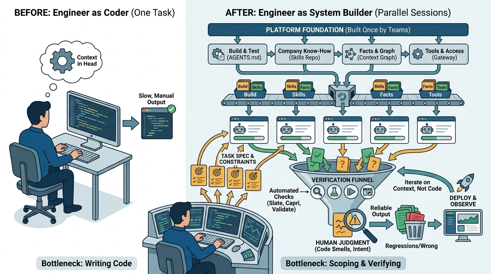

Part IV — PRACTICE: Measuring and Leading
The Engineer as Context Builder: Specs, Parallel Sessions and Verification

Image generated by Google Gemini (gemini-3-pro-image-preview)
Part IV — PRACTICE: Measuring and Leading

Image generated by Google Gemini (gemini-3-pro-image-preview)